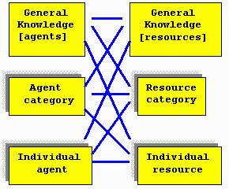

Hypereconomy
(Submitted to Dow Jones’ MaRKETS magazine April 30, 1998)[ Draft 0.76 ]
By Alexander Chislenko
Automated multi-agent systems
Agent-based systems modeling is a new and increasingly popular field of information science. An agent represents not only static features of an object, but its behavior, goals and methods of interaction with other agents and the environment. The agent approach has proven useful for studying many different kinds of complex systems, from natural environments to economic processes. Automated multi-agent systems let us model large numbers of agents interacting with each other and changing environments, to study the dynamics of various environments, to test existing theories of social organization, to represent conflicting corporate and individual interests, and to control the behavior of distributed automated systems.
New digital environments flout our expectations in dramatic and essential ways, and will force us to reconsider many of our views on multi-agent systems. The internal structure of a computing environment is significantly different from that of the physical space. There is no concept of premium location here, or differential rent. Software systems differ in methods of agent replication and deployment, transaction costs, and many other essential characteristics from both natural and artificial physical environments. To take advantage of the peculiarities of multi-agent computing systems, we need new architectures with new, adaptive regulatory and resource-allocation mechanisms.
Economy as information exchange
Symbolic communications have always been a driving force in social development. Communications allow people to share their experiences, and to turn loose agglomerations of individuals into a coordinated, distributed decision-making system. A crucial role in social communications belongs to methods of making the knowledge of individuals publicly available in generalized form, and of feeding this public knowledge back to individual decision-makers. Money, famously, is just such a mechanism. In a money-based market economy, individuals have to know almost nothing about the economy as a whole; simply by adjusting their consumption and production efforts to the shifts in prices, they coordinate their efforts with all the other agents in the system. This lets the economy grow more sophisticated, adaptive, and efficient at the same time.
Next stage: hypereconomy
With still greater scale and complexity of the system, it becomes increasingly important to help people and organizations find necessary goods and services, and estimate their utility for everybody’s particular needs. These focusing and utility assessment mechanisms have been traditionally provided by individual experiences and unmediated sharing of knowledge, similarly to value discovery mechanisms before the appearance of money.
The recent introduction of fast telecom networks, voluminous storage and efficient retrieval of information, standardized representations of complex data and efficient computational tools created a foundation for a "second signaling mechanism" in an economic system. Together with conventional indicators of average costs of resources and services, the new crop of signaling instruments may deliver indicators of expected benefits that particular agents may derive in their individual situations from such resources or services. Then agents can be better equipped to optimize their behavior by using all available knowledge for comparing personal and global costs, risks, and utilities.
In an economy, the utility considerations standing behind the individual decisions of market agents, together with knowledge flows and the internal logic of value balancing mechanisms form the "invisible hands" of the market machinery. In hypereconomy, these "hands" can become visible – for a price.
Basic communication tools of the computational hypereconomic system are borrowed from the traditional economy, but become more liquid (faster, focused distribution and lower transaction costs) and more efficient. Other parameters turn from scalar to vector or a more complex structure (e.g., augmentation of the numerical representation of the value of an object with a matrix of its utilities for various purposes as estimated by different agents). Some features, such as non-scalar and situational derivatives for assessing values and risks of, and balancing among, particular utilities will be entirely new. In many cases, new market indicators, unlike today’s currency rates and stock prices, may themselves be subject to private ownership, controlled emission, and trade.
Hypereconomy model
The first implementation of the hypereconomy model explores the situation where a large number of agents compete for a multitude of different resources. Both agents and resources are grouped into categories that share certain utility functions. During the system function, the experience of agents with system resources are aggregated and made available to individual agents.
On the most detailed level, agents record their experiences with particular resources. On the next level, of individual situational utility, there are records of the average performance of an agent with each category of resources, and average performance of a category of agents with each resource. Average situational utility records contain data on average utility of categories of agents with categories of resources.
The experience levels can be represented in the following diagram:

When estimating the utility of a particular resource, an agent supplements its own experience with more general knowledge, relying largely on the most detailed layers of knowledge that have sufficient amount of data.
This model is expected to deliver relevant recommendations of consumer items, based on the previous experience of similar consumers with the same or similar items, help target advertisements, and assist in other tasks involving allocation of groups of resources among different groups of users.
First implementation of hypereconomy: targeted advertising.
Advertisers usually know ad delivery costs, but their targeting methods are very imprecise. Many advertisements miss their targets and waste people’s time, while information about many good products doesn’t reach the individuals who may benefit from them. An advanced mechanism for combining and sharing (for a price) advertising and sales information of different companies would result in more efficient proliferation of useful goods and services, support for small and specialized market segments and dramatic reduction of ad targeting costs.
An advertisement exchange system on the Web TrafficX.com was chosen for the first implementation of hypereconomy. In this system, each website displays banner ads of other sites and sends them visitors, and receives a corresponding number of visitors from other sites. Selection of appropriate ads for display on each page determines the performance of such a system. An automated economy is a natural solution here as it provides an adaptive optimization mechanism allowing different websites to bid for the rights to display the most successful banners. However, to compare the utilities of different banners, a site needs to show each banner a large number of times, which amounts to displaying an unrealistic total number of ads before it can make rational choices. The task of appropriate banner selection becomes much easier if the sites exchange information about their usage of different banners. The hypereconomic approach here consists of sharing the experience among groups of similar websites and banners. This allows the system to rapidly learn optimal combinations of websites and advertisements and quickly react to changing conditions.
Performance of hypereconomy
A model of the banner selection system has been implemented with a individual utility-based algorithm (where every agent selects the best resource currently available, regardless of price), adaptive economic optimization, economic mechanism extended with considerations of average resource utility, and the hypereconomic system with situational utility indicators. In the experiments on a reasonably diverse system with 700 ads in 30 categories, the hypereconomic model provided the highest adaptation rate, and the greatest overall efficiency out of all tested methods.
Further development
The hypereconomy project, as other agent-based approaches to market analysis, is a very new undertaking, with a large number of potential applications. Its current implementation represents one of the possible approaches to combining knowledge and resource management. In the following years, we may see numerous implementations of such methods. Together with electronic money, automated auction and contract systems, market analysis tools and other elements of computational economics, these methods will merge into distributed flexible control mechanisms appropriate for the emerging information economy, and will help make it more sophisticated, adaptive, and efficient. The ability to master these tools can soon become a survival skill for any financial organization.
About the author
Alexander Chislenko works in the area of intelligent information technologies and future studies in MIT Media Lab. His writings are available on the Web at
http://www.media.mit.edu/~sasha/